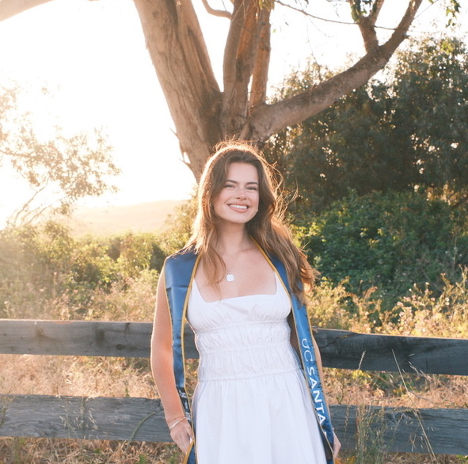

About
UC Santa Barbara graduate, with a BA in Global Studies and a minor in Media & Art Design, providing an academic foundation built on understanding people, culture, and the world we inhabit.
Self-taught in AutoCAD and SketchUp, with a design sensibility drawn to open and fresh spaces, blending biophilic freshness with neo-industrial edge.
Backed by client-facing experience across hospitality and retail, and a global perspective that informs every design decision from sourcing to spatial storytelling.